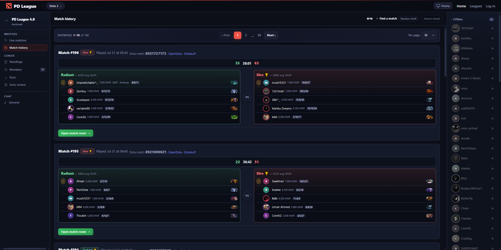
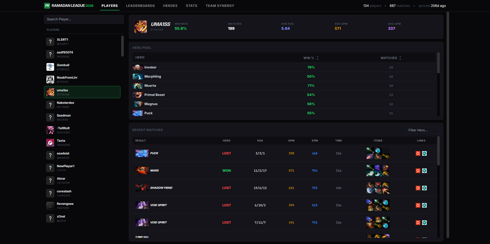

Mahad Khan
Software engineer
I studied software engineering at NUST in Islamabad. Since then I have worked on enterprise web products at Motive, cloud infrastructure at Alachisoft, EEG and deep learning research at TUKL Lab, and a league and analytics platform at PKDota.
I also write low-level ML code, like qwen.c, which runs Qwen3 inference in plain C and CUDA, and I have contributed to typescript-eslint.
I am currently open to full stack or AI engineering roles. You can contact me at mahadk20@gmail.com.
Work
Product Engineer, PKDota
Feb 2024 – Aug 2026
Remote
- Co-designed and shipped a league platform used by 100+ active players across 200+ matches. It covers registration, matchmaking, reporting, match stats, moderation, chat and Discord integrations.
- Designed a data pipeline that pulls data from APIs and scrapers and processes it for our data store.
- Built an analytics site on top of that data store.
- Worked closely on product and technical decisions: architecture, UI/UX, features, engagement and growth.




AI Research Intern, TUKL Lab
Feb 2025 – Jul 2025
SEECS, NUST · Islamabad
- Implemented GAN and WGAN from scratch on MNIST and Fashion-MNIST to study how stable generative models are.
- Reproduced WaveNet-LSTM on the TUAB EEG dataset and matched the published 85% accuracy.
- Built a PyQt annotation tool that works with a GP3 eye tracker, so EEG can be labeled with help from gaze data.
- Studied white-box adversarial attacks on deep learning models for EEG classification.
- Researched end-to-end deep learning for EEG waveform segmentation (spike, delta and slow-wave detection).
Software Engineer, Motive
Mar 2021 – Aug 2023
Remote · Islamabad
- Built major features for enterprise customers, from requirements to production, on a Ruby on Rails and Postgres backend with an Angular frontend.
- Improved the Rails test suite, cutting CI runtime by 35% and raising the build pass rate from 25% to 95%.
- Proposed a shared UI component library, built a team around it, and led its adoption across frontend work.
- Migrated the codebase from TSLint to typescript-eslint.
- Sped up the frontend pre-commit step from 60s to 5s.
- Mentored incoming interns for two years in a row.
Software Engineer, Alachisoft
Jan 2020 – Mar 2021
Islamabad
- Led the design and launch of a new multi-tenant SaaS platform, from initial concept to production.
- Built a C# service that provisions custom clusters in private Azure and AWS environments.
- Extended a Kubernetes operator in Go and added unit and end-to-end tests with KUTTL.
Projects
- Inference for Qwen3 0.6B, written from scratch in C/CUDA with no dependencies.
- Parity tests against PyTorch.
- Implements GQA, weight tying, RMSNorm and SwiGLU.
- Contributed new rules and bug fixes. The project has 16k+ stars and is used in most frontend projects.
- Async job worker library in Rust backed by an SQLite queue.
- Jobs are leased, retried, and end in a success or failure state.
- Generic
Worker<T>with aHandlesJob<T>trait for plugging in async handlers over serde payloads.
Skills
- Languages
- Python, Rust, C, JavaScript/TypeScript, Node.js, HTML, CSS, C#, Ruby
- Libraries
- PyTorch, NumPy, React, Angular, FastAPI, Tokio, CUDA
- Tools
- OpenCode, Codex, Neovim, Linux, Docker, Git, Kubernetes, AWS, Azure, Postgres, SQLite
Education
B.Sc. Software Engineering, NUST
2015 – 2019
National University of Sciences and Technology · Islamabad